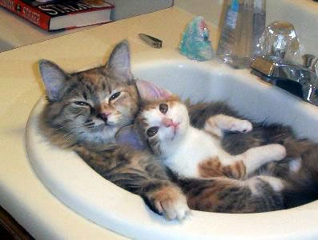

I have always loved animals. Unlike humans, animals are simple
and have no hidden agendas. They are forgiving and teach us a lot. I have always
had a special love for cats. I believe that cats are cool. Here are 8 reasons why
cats are the coolest:
1) They are very independant:
They can always stay by themselves and do need to be entertained.
They will be fine if you need to leave for a few days. All you have to make sure is
that they have enough food and water.
2) They can use the bathroom:
All cats need a litter box. Although youmay find litter boxes gross,
they are much better than having to clean after a dog going to bathroom all over the house.
You can even teach a cat to use the real toilet.
3) They don't need to be walked
Cats needs are: food, sleep and hanging out.
They don't need to be walked during the day while tyou are at work nor
do you need to walk them before bedtime.
4) They are good with kids
Cats are usually great with kids. You never hear about any cat that
injured or killed kids.
5) They are quiet
Cats compared to dogs are pretty quiet. They do not
bark at the passing cars. You will not hear cats barking in the
middle of the night waking the whole house up.
Cats also will never be loud or jump on your visitors.
6) They are clean
Cats never smell like dogs. They bathe themselve everyday
while dogs sweat become smelly while cats constantly make
sure that they are clean.
7) They will be content to be inside all their life
Cats can live indoors all their lives and be happy. THey will not
bring in any fleas or thicks.
8) They are natural hunters
Having cats around will help you control the population
of insects and you will never have any rodent problems in your house.